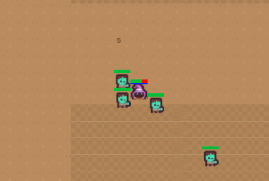
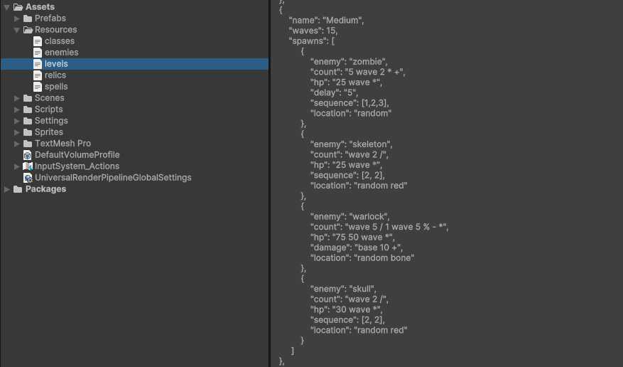

Mage Fight (Unity)
October 2025

2D top-down Rogue-like/Survival hybrid game. The core pillars of the game are crafting spell casting system using a flexible spell-system, collecting relics, which give the players additional advantages, and fighting against (and defeating) the incoming monsters.
Team: Worked with a team of 4 people.
Responsibilities: Randomized relic and spell drops, inventory management, runtime validation of inventory items, and dynamic UI updates, relic system that effects player stats and gameplay mechanics, crafting system for spells and relics.
Tech: Unity, C#
Process
Inital Prototype (No Inventory)
JSON File Formatting
Gameplay Clip
Summary of Contributions
Reverse Polish Notation
Developed a standalone .NET Reverse Polish Notation (RPN) library with stack-based evaluation and variable support, integrated into Unity to dynamically compute JSON-defined enemy spawn counts and stat scaling.
This system allowed for flexible and scalable game design, enabling designers to easily modify enemy behavior and difficulty scaling without requiring code changes to the system.
Enemy Spawning
Designed multiple difficulty modes (Easy, Medium, Endless) with scalable enemy counts, compositions, and stat growth per wave.
Built a JSON-driven configuration system defining enemy types, spawn rules, stat overrides, sequencing patterns, delays, and spawn locations.
Implemented cyclical spawn sequencing logic to control grouped enemy spawns with timed delays and randomized spawn-point selection.
Spell Modifiers
Players can equip up to four spells at a time, each displaying mana cost, estimated damage, and cooldown in the UI. Spells consist of core properties (mana cost, damage, cooldown, projectile behavior, and spell power) that can be modified by randomized modifiers earned after each wave, allowing players to acquire dynamically generated spell variations such as higher-damage homing bolts or multi-cast explosive attacks.
Implemented relic UI systems to display current player relics on screen.
Crafting System
Implemented a randomized spell component and crafting system, adding a 33% drop chance for spell components upon enemy defeat. A spell component is either a base spell or a modifier that players collect and combine to construct and customize their active spells.
Designed an inventory UI system to store and display collected components, allowing players to manage and modify active spells between rounds.
What I Learned
Data Driven Systems
By implementing JSON-driven enemy spawning, a modular spell crafting framework, and a trigger-effect relic architecture, I learned how powerful data-driven design can be for balancing and expanding gameplay without rewriting core logic.
Separating configuration from behavior made iteration easier and reinforced the importance of clean architecture in game development.
Event Bus
Integrating relic triggers into the EventBus required me to understand how different gameplay systems communicate with one another.
I modified multiple core systems such as the GameManager, PlayerController, and EnemyController to respond to events dynamically rather than relying on private functions without calls from other files.
This experience made me understand decoupled design patterns and how to build systems that are more flexible and clean.
Managing Complex UI and Game State
Implementing the inventory and crafting UI systems required me to manage complex game state and ensure that the UI accurately reflected the player's current spells, components, and relics.
This familiarized me with Unity's UI systems that are responsive to things like game state changes and player inventory.